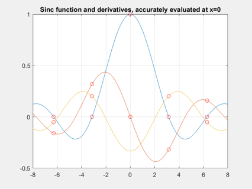
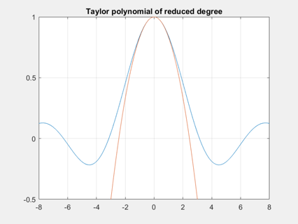

Example 5: Sinc function and rule of l'Hospital
sinc = @(x) sin(x)./x;
x = ainit(linspace(-8,8),2);
y = sinc(x);
figure(1), clf
plot(x{0},y{0},x{0},y{1},x{0},y{2})
grid on, hold on
x = ainit(pi*(-2:2),2);
y = sinc(x);
plot(x{0},[y{0};y{1};y{2}],'ro')
[x{0};y{0};y{1};y{2}]
title('Sinc function and derivatives, accurately evaluated at x=0')
x = ainit(0,4);
disp('Quartic Taylor polynomial of sin(x):')
disp(ataylor(sin(x)))
disp('Cubic Taylor polynomial of sinc(x):')
disp(ataylor(sinc(x)))
disp('Quadratic Taylor polynomial of sinc(x^2):')
disp(ataylor(sinc(x.^2)))
t = linspace(-8,8);
figure(2), clf
plot(t,sinc(t),t,polyval(ataylor(sinc(x)),t))
grid on, axis([-8 8 -0.5 1])
title('Taylor polynomial of reduced degree')
ans =
-6.2832 -3.1416 0 3.1416 6.2832
-0.0000 0.0000 1.0000 0.0000 -0.0000
-0.1592 0.3183 0 -0.3183 0.1592
-0.0507 0.2026 NaN 0.2026 -0.0507
Quartic Taylor polynomial of sin(x):
0 -0.1667 0 1.0000 0
Cubic Taylor polynomial of sinc(x):
0 -0.1667 0 1.0000
Quadratic Taylor polynomial of sinc(x^2):
0 0 1
 